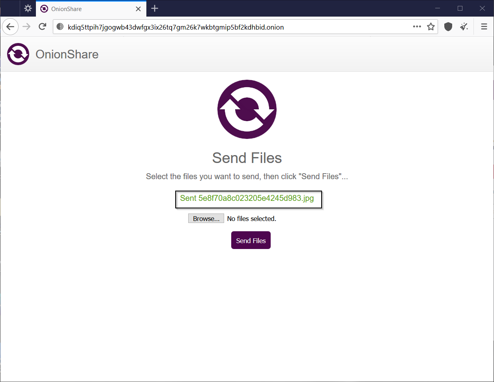
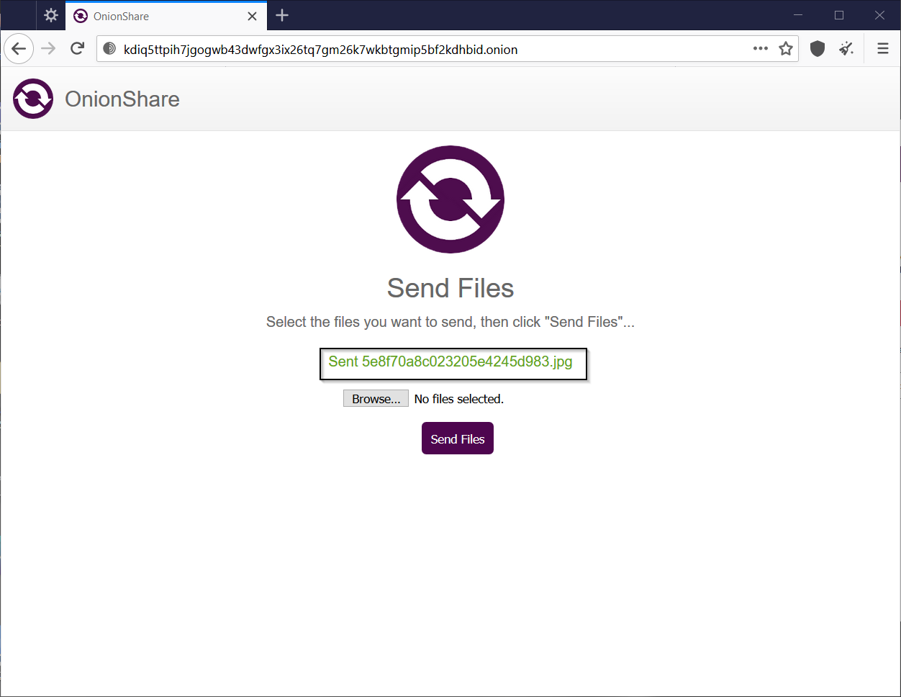

Before diving into Onion Share, I would like to show you the table of contents.
OnionShare is an open-source tool that's available
for Linux, Windows, and macOS. It lets you securely share files
directly from your computer to the receiver without revealing your identity in
the process because it uses end-to-end encryption.
Note: Using TOR Browser is mandatory in-order to send/receive
files using Onion Share.
The first step is to go to the official download
webpage of Onion Share.
Click on “Download
for [OS]” to download the setup file.
Open the
setup file, and then click on the “install” button.
The
installation will start immediately after clicking on the “Install” button.
Click on
the “Close” button to close the setup.
Open
Onion Share, it might take a few minutes to connect to the TOR network.
After
opening Onion Share, go to the “Share Files” tab, and then click on the “Add”
button.
Select the
file which you want to send.
Click on
the “Open” button after selecting the file.
Once the
file has been uploaded, click on the “Start sharing” button.
Send the download
link to the recipient.
The recipient
must open the link via TOR Browser.
The
recipient may receive a confirmation message, click on the “OK” button to
confirm.
Click on
“Download Files” to download the file(s)/folder(s).
Click on
“Save File” and then click on the “OK” button.
You will
see the downloaded file in your default download location.
Once the
recipient receives the file, turn off file sharing in OnionShare by clicking on
the “Stop Sharing” button.
This is
another way of sending files, but in this method, the sender doesn’t send the
link, instead the receiver sends the link to the sender.
Open
OnionShare, it might take a few minutes to connect to the TOR network.

After
opening OnionShare, go to the “Receive Files” tab, and then click on the “Start
Receive Mode” button.
Send the
generated link to the sender.

When
the sender will open the link via TOR Browser, he/she will receive a
confirmation, click on the “OK” button to confirm
Now
the sender will click on the “browse” button, and then he/she will select the
file. After selecting the file, the sender will click on the “Send Files”
button.
 

To know
that whether you have received the file or not, click on the download icon
present on the top right of the screen.
If someone
has sent you a file, then you will see a message saying “Transferred [Date,
Time]” and below this message you will be able to see the name of the received file.
You will be
able to access the received file by going to C:\Users\[USERNAME]\OnionShare\[DATE]\[ID]\ .
OnionShare
also allows you to host a website for a small period of time.
Open
OnionShare, it might take a few minutes to connect to the TOR network.
After
opening OnionShare, go to the “Publish Website” tab, and then click on the “Add”
button.

Select the folder
of your website, and then click on the “Open” button.
After
selecting the folder of your website, click on the “Start Sharing” button.
Once the
sharing has started, someone can easily access your website, by going to the
generated URL via TOR Browser.
The people
who will access the website may receive a confirmation, click on the “OK”
button to confirm.
To turn off
sharing of the website, click on the “Stop Sharing” button.